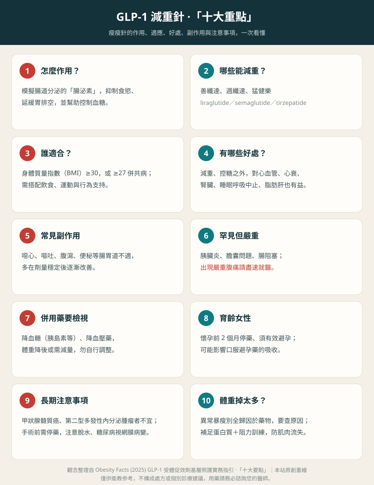

什麼是「減重針」？
大家俗稱的減重針、瘦瘦針、瘦瘦筆，指的是一類模擬人體「腸泌素（incretin）」的藥物。腸泌素是我們進食後腸道分泌的荷爾蒙，會讓大腦產生飽足感、減少食慾，並延緩胃排空、幫助控制血糖。這類藥物原本是糖尿病用藥，後來發現能明顯減重，才逐漸用於體重管理。
減重針不是仙丹，也不是醫美療程——它是處方藥，需要由醫師評估後開立，並且必須搭配飲食與運動，才能有效又安全地減重。

減重針怎麼分類？
目前的減重針依「作用在哪些腸泌素受體」分成兩大類：
① GLP-1 單一受體促效劑
只作用在 GLP-1 一種受體。包括：善纖達（Saxenda，成分 liraglutide，每日施打）、胰妥讚（Ozempic，成分 semaglutide，每週施打，適應症為第二型糖尿病）、週纖達（Wegovy，成分 semaglutide，每週施打，減重適應症）。另有口服的 semaglutide。
② 雙重腸泌素受體促效劑（GLP-1 與 GIP）
同時作用在 GLP-1 與另一種腸泌素（GIP）兩種受體（俗稱「雙標靶」）。代表藥物是猛健樂（Mounjaro，成分 tirzepatide，每週施打）。因為雙重作用，臨床試驗中的減重效果最強。
常見減重針一覽
- 善纖達（Saxenda）／liraglutide／GLP-1／每日一針
- 胰妥讚（Ozempic）／semaglutide／GLP-1／每週一針（原為糖尿病藥）
- 週纖達（Wegovy）／semaglutide／GLP-1／每週一針（減重適應症）
- 猛健樂（Mounjaro）／tirzepatide／GIP＋GLP-1 雙重／每週一針
效果差多少？
以臨床試驗的平均減重幅度來看，大致是：
liraglutide（善纖達，約 5–8%） ＜ semaglutide 2.4mg（週纖達，約 15%） ＜ tirzepatide（猛健樂，約 20–22%）
但這是平均值，實際因人而異，也和劑量、療程長短與生活型態配合有關。效果最強不等於最適合你——藥物選擇要看體重、共病、能不能耐受副作用，以及經濟考量。
不只是減肥：心血管與代謝的好處
身為心臟科醫師，我特別想提醒一個常被忽略的重點：這類藥物的意義遠不只是「瘦下來」。
- 降低心血管事件：大型的 SELECT 試驗顯示，對「有心血管疾病、過重或肥胖但沒有糖尿病」的人，semaglutide 能降低心肌梗塞、中風等重大心血管事件約兩成。
- 改善血糖：本來就是第二型糖尿病的有效用藥。
- 改善代謝：對脂肪肝、血壓、血脂等也有幫助。
- 更多器官的好處（證據陸續累積）：對心臟衰竭、慢性腎臟病、睡眠呼吸中止症、退化性關節炎等，也觀察到可能的益處。
誰適合？怎麼用？
- 一般用於身體質量指數（BMI）≥ 30，或 ≥ 27 併有肥胖相關共病（如高血壓、糖尿病、血脂異常）者；實際適應症依各藥物與醫師評估而定。
- 劑量採階梯式漸進調高，讓身體適應、減少腸胃道不適。
- 需要持續搭配飲食控制與規律運動，藥物只是「助攻」，不是取代生活型態。
- 台灣目前用於減重多為自費；作為糖尿病治療時另有健保給付規範。
副作用與注意事項
常見副作用：噁心、嘔吐、腹瀉或便秘等腸胃道不適，通常在劑量漸進調高的過程中逐漸緩解。
較少見但需注意：胰臟炎、膽囊問題。
不建議使用：有甲狀腺髓質癌病史或家族史、第二型多發性內分泌腫瘤者；懷孕或準備懷孕者（準備受孕者建議在懷孕前約 2 個月停藥；藥物也可能影響口服避孕藥的吸收，需避孕者請與醫師討論方式）。使用前務必告知醫師完整病史與用藥。
較少見但需注意：胰臟炎、膽囊問題。
不建議使用：有甲狀腺髓質癌病史或家族史、第二型多發性內分泌腫瘤者；懷孕或準備懷孕者（準備受孕者建議在懷孕前約 2 個月停藥；藥物也可能影響口服避孕藥的吸收，需避孕者請與醫師討論方式）。使用前務必告知醫師完整病史與用藥。
最重要的安全提醒：減重針是處方藥，務必透過正規醫療院所、由合格醫師評估後使用。切勿在網路或來路不明管道自行購買施打——可能買到假藥、劑量錯誤或保存不當的藥物，風險很高。
用藥期間的實用提醒
- 保住肌肉：快速減重時容易連肌肉一起流失，建議攝取足夠的優質蛋白質並搭配阻力（重量）訓練，維持肌肉量，也有助於停藥後不易復胖。
- 記得補水：藥物可能降低口渴感，要規律補充水分，避免脫水影響腎臟。
- 體重掉太快、太多要查原因：若減重速度異常、或停藥後仍持續下降，別全歸因於藥物，應就醫排除其他疾病。
- 要開刀前先告知：這類藥會延緩胃排空、增加麻醉時的嗆入風險；一般建議每日劑型手術當天暫停、每週劑型術前約一週暫停，並事先告知手術與麻醉團隊。
- 其他藥可能要跟著調整：體重與血糖下降後，原本的降血糖藥（如胰島素）或降血壓藥可能需要減量，以免低血糖或頭暈跌倒——請由醫師調整，切勿自行增減。
常見問答
減重針要打多久？停了會不會復胖？
肥胖是慢性、容易復發的疾病。研究顯示停藥後體重多半會逐漸回升，因此減重針通常是長期治療，且一定要搭配飲食、運動與生活型態調整，才能維持成果。是否減量或停藥應由醫師決定，不要自行停用。
糖尿病的針（如胰妥讚）拿來減重可以嗎？
成分相同的藥物（semaglutide）確實同時有糖尿病版（胰妥讚 Ozempic）與減重版（週纖達 Wegovy），差別在適應症與核准劑量。是否適合、用哪一種、劑量多少，都要由醫師依你的狀況判斷，不建議自行比照使用。
怕打針，有口服的選擇嗎？
有口服劑型的 semaglutide，但服用方式（需空腹、配水、服後間隔進食）較講究，效果與適用情形也不同。是否適合請與醫師討論。
要手術或開刀前，減重針需要停嗎？
需要。這類藥會延緩胃排空，全身麻醉時可能增加嗆入（吸入性肺炎）的風險。一般建議每日劑型在手術當天暫停、每週劑型於術前約一週暫停，並務必事先告知你的手術與麻醉團隊，由醫師決定實際做法。